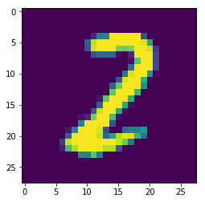
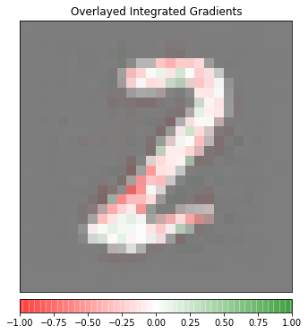

import json
import captum
from captum.attr import visualization as viz
import os
import logging
import numpy as np
import json
import torch
from transformers import AutoTokenizer
from PIL import Image
from torchvision.transforms import ToTensor
from matplotlib.colors import LinearSegmentedColormapCaptum Visual Insights for MNIST Classification Model
This Notebook helps you to get started with the Captum Insights..The example covered here is from the MNIST Classifier model used in Torchserve.In order to understand the word importances and attributions when we make an Explanation Request, we use Captum Insights
Create the mar file for the MNIST Classification model and place the artefacts from where you can serve the model.
!torch-model-archiver --model-name mnist_explain --version 1.0 --model-file serve/examples/image_classifier/mnist/mnist.py --serialized-file serve/examples/image_classifier/mnist/mnist_cnn.pt --handler serve/examples/image_classifier/mnist/mnist_handler.py/bin/sh: 1: torch-model-archiver: not found#curl request to make a Prediction Request
!curl -H "Content-Type: application/json" --data @examples/image_classifier/mnist/mnist_ts.json http://127.0.0.1:8080/predictions/mnist_explain2Make a Explanation response for the bert model by specifying body in the service envelope in the config.properties file, like below:
service_envelope=bodyWhen a json file is passed as a request format to the curl, Torchserve unwraps the json file from the request body. This is the reason for specifying service_envelope=body in the config.properties file
#curl command to make an Explanation Request and the response is as below:
#mnis_ts.json file contains the input for the inference request
!curl -H "Content-Type: application/json" --data @examples/image_classifier/mnist/mnist_ts.json http://127.0.0.1:8080/explanations/mnist_explain[
[
[
0.004570948731989492,
0.006216969640322402,
0.008197565423679522,
0.009563574612830427,
0.008999274832810742,
0.009673474804303854,
0.007599905146155397,
0.00636138087221357,
0.005768828729217899,
0.004394465747976554,
0.004948218056579564,
0.005273460629510146,
0.005523799690682735,
0.007789356618988726,
0.008759363533045739,
0.004304805440696481,
0.010970579124389682,
0.0032484391676092287,
0.005998033079490753,
0.003754366000510472,
0.002765290919421939,
0.0043140862178245466,
0.001400857504198272,
0.004841846660876866,
0.0006374841493763042,
0.001855854010034871,
-0.0008280458282478836,
-0.0
],
[
0.00166251588071497,
0.0044437916933807,
0.012387840712028125,
0.009450844412298704,
0.016143820999121934,
0.007797502488838184,
0.01394224080820749,
0.007557430593412898,
0.005479090725005886,
0.00975132063969513,
0.004764407589221943,
0.007292147866982278,
0.011797999173224124,
0.006462685044317422,
0.0033832139391885693,
0.009225059436106376,
0.0016750701226780703,
0.007362305264288119,
0.005270057995809192,
0.005453598390261765,
0.004342725904924113,
0.005856133423715095,
0.012168384816778567,
0.009902719550207576,
0.009813113104687824,
0.0034427582781191165,
0.002292428478682038,
-0.0
],
[
0.011528255374329572,
0.009146988980595707,
0.022265419756328467,
0.017558217187278263,
0.02477055483346851,
0.0214126935822772,
0.014453379925406693,
0.009229923687803773,
0.01016500161212654,
0.006547578386614475,
0.03472136349734433,
0.015304972271039665,
0.007053292398788774,
0.017017104469952547,
0.000428880443110661,
-0.03446447087290062,
-0.028986433652493634,
-0.017016031894781198,
-0.0177712584787139,
0.016880202827783346,
0.008659977533168361,
0.010573380772576567,
0.016392586524799916,
0.013665163896483002,
0.009255274713238825,
0.004815627223860795,
0.0032046895568865687,
-0.0
],
[
0.0064381901649377725,
0.005482977636637665,
0.014281822341768433,
0.014896173801426297,
0.02243572942956626,
0.015215458663741074,
0.031213338824478135,
0.02189213588991701,
0.018180598309071448,
0.03125694736792799,
0.05227424653471739,
0.02227170720300342,
0.010566675257167063,
0.005880461233122001,
0.0073714263085994745,
-0.05819867982754784,
-0.07052216778702386,
-0.014321804485030407,
-0.010228087026138416,
-0.021572370099731973,
0.009291820303892216,
-0.007033522522145339,
0.021310003639157426,
0.015776696984352967,
0.018816130371453497,
0.014796157049598923,
0.007133092722335582,
-0.0
],
[
0.01288908211444727,
0.009241330239921266,
0.01903574208549175,
0.007234016161703008,
0.018466540428849768,
0.005577407347496944,
0.02317224185981127,
0.020410131134924972,
0.004391232120978804,
-0.0014250168106010638,
0.038245516542454866,
0.005503564252868609,
-0.013327790354209718,
-0.017123156293358612,
-0.38494986552341354,
-0.5038683843682443,
-0.32766597295590955,
-0.3410664061572259,
-0.23823562175775412,
0.013047128190147151,
-0.0026851381924494887,
-0.03269753899956235,
-0.012143627906102036,
0.007277866769707327,
0.005280617396966189,
0.005043191383860095,
0.0016267561451155906,
-0.0
],
[
0.004671167814663807,
0.00666956644329794,
0.017121951435288316,
0.013696786315898067,
0.014920347300289684,
0.003035267671205596,
0.01868255532793876,
0.016070625840328073,
0.01886351521286884,
-0.03419997199515245,
0.03624187611112635,
-0.37946019218526233,
-0.27036209063999617,
0.036982165941239535,
0.13571687277445446,
-0.17258095231920142,
0.2868882941114911,
-0.0029589213203174984,
-0.3049862261393523,
-0.1545121068058157,
-0.00911779562390712,
0.0007181363313936802,
0.0019109263870262852,
-0.007108051900508097,
0.01071538155320752,
0.018331707995372135,
0.007118541518524465,
-0.0
],
[
0.011730132121924135,
0.006826550904781909,
0.02400405509100923,
0.019528626451574327,
0.0262460482968153,
0.004725325524843718,
0.011773783807310551,
0.0014583252908695022,
0.025192076848896704,
0.0386878656321084,
-0.014956023786495569,
-0.26154688891913713,
-0.059379918346905036,
-0.2145426784502667,
-0.18480000052723788,
0.1823583417229497,
0.295032362564659,
-0.1469518144799008,
-0.37042445313348005,
-0.22677560457048726,
-0.0023366662614289976,
0.00424747761564603,
-0.012314807468860952,
-0.0006275747681590516,
0.009095566738055002,
0.010577039934850442,
0.0021456214370207767,
-0.0
],
[
0.006522710992560629,
0.006658460491438304,
0.011681141910031003,
0.01385473038303331,
0.017837691311278624,
0.006804051668131839,
0.014004743748695307,
0.013872584350285332,
-0.024564484071584135,
-0.041963559076796705,
-0.034551623910865435,
-0.024959728547101028,
0.00453889674678142,
0.02602897629397592,
-0.09770229904452654,
-0.0078572486893087,
-0.017651245373454694,
-0.0013648177977099317,
-0.15123346128201384,
-0.15900134281248063,
0.047439669621457285,
0.018941404525559525,
-0.02981872755921296,
-0.01172369828767206,
0.0048622392441007205,
0.009659960490814933,
0.007569256344790838,
-0.0
],
[
0.009820465826493659,
0.010157525421855,
0.023513310376312675,
0.017823668566007252,
0.014352911426498664,
0.006792569818753856,
0.01709471817027299,
0.022002334336862633,
0.011678225643802383,
-0.07573987937481919,
-0.05761077882024471,
-0.06535464771581313,
-0.08852594565296287,
-0.08690353979606168,
-0.038970146009268465,
-0.014092121919642812,
-0.05026295528427675,
-0.018569489865643073,
0.10833790599616444,
-0.06861286943571396,
-0.16792157639925268,
-0.005195128018432535,
-0.04163920251519448,
-0.0071293679421926175,
0.01481990402102848,
0.00892140817543594,
0.0041566054329483515,
-0.0
],
[
0.004465642435917224,
0.0068508854554447845,
0.0129028312965937,
0.013639461034673374,
-0.00032053191313815665,
0.003910277520708287,
0.009035449300533663,
0.009675447061916552,
0.0184014115628898,
-0.026809595920222723,
-0.016714827848266587,
-0.04334933136874045,
-0.016360022271701663,
-0.007439369004492128,
0.015627533034300974,
-0.05196060531288124,
-0.07462407774966506,
-0.040328363055968,
0.16436907704679576,
-0.10282470891172335,
-0.15888629232910523,
-0.005633529148818552,
-0.0327755964983166,
-0.010684832766747128,
0.017376999411916724,
0.0068671187821933155,
0.001322469861080909,
-0.0
],
[
0.009060879427516098,
0.013138363692372975,
0.027552776784759488,
0.008328838024912442,
0.03330297116907518,
-0.005269810920320149,
0.016500515801182208,
-0.012387738162166283,
-0.010385546090051406,
-0.012111983065996262,
-0.013766926982694555,
-0.02419507832753571,
-0.02106385595631272,
0.04478263421842224,
-0.05015260717059383,
-0.14608027807901755,
0.020168070906765,
-0.1768984357481869,
-0.026853884992248167,
0.048344315951360725,
-0.13650171232571318,
-0.041908175553481294,
-0.012802079822805831,
0.010229497261795494,
0.023323646788395404,
0.0023560714156533194,
0.0034970590866629713,
-0.0
],
[
0.004333510430861486,
0.010170070415895054,
0.013534043401616801,
0.019568579922536897,
0.003896066812369829,
-0.002344431415341743,
-0.005318073005144471,
-0.00668411363833911,
0.005492772288872441,
-0.01742178603003337,
-0.02583245209149884,
-0.0224758791407631,
-0.0024575710398865073,
0.012312911409957859,
-0.12523219571299,
0.06440137832473761,
-0.10151132053715228,
0.3272276797863912,
-0.22650441230843657,
-0.09795739349381771,
-0.06038186892593042,
-0.07863148342432824,
0.006171918741675569,
0.007392134409629039,
0.015564094506721438,
0.00870364130577883,
0.0013642514536805228,
-0.0
],
[
0.007275359844097868,
0.014084568700328641,
0.013559615657054868,
0.027847544725258733,
0.0037534519992355807,
-0.01100678432395469,
-0.035677531475821776,
-0.01741305646985304,
-0.028202377881469346,
-0.01659200024892211,
-0.025004752715671655,
0.03940142799353865,
-0.006935097770278363,
-0.07919714562320493,
0.09328278306479532,
-0.1702641890911152,
0.08847574553544772,
-0.02530949866205925,
-0.4156587049439625,
-0.05348891696170698,
-0.09691602330853981,
-0.02290306688952313,
0.07867733225536148,
0.008387871009833058,
0.03103757514831976,
0.0095476041086751,
0.0048975684714045445,
-0.0
],
[
0.005270409208072307,
0.012425094744783004,
0.017236165129366574,
0.022829355229962666,
0.006738329199251001,
0.019327303688831485,
-0.009565645998398029,
0.010368217162211011,
0.0005331798494046443,
-0.013186581993959539,
-0.023845998166089816,
0.012288673778235207,
-0.0013052097989707501,
-0.09691418233919591,
0.23162136816282064,
-0.11681173579335637,
-0.11046197973382482,
-0.2723711309548866,
-0.1935074346224829,
-0.05611027584940715,
-0.09813431344224743,
0.048928590674281236,
0.005389681395266223,
0.00966407269460025,
0.018803857478553475,
0.007985762394404416,
0.0021901347381123927,
-0.0
],
[
0.0073801918992191145,
0.019572452679726005,
0.011062355646768891,
0.02619356301864183,
0.007427339449517372,
0.0032789556783711323,
-0.007245173321052202,
0.004624768185220014,
-0.01157116458837452,
0.004316197656264229,
-0.026239501539836643,
-0.09986898502654395,
0.021094888763720617,
-0.09874684614845193,
-0.2379328647898273,
-0.11023317481481096,
-0.08547650014675423,
0.28544968332495346,
-0.0758757730426992,
-0.06974352161399618,
0.01234133667061945,
0.0377634721686999,
0.022022240659507912,
0.02028501969632055,
0.012077822718493867,
0.00025287162047371033,
0.0028423975463497705,
-0.0
],
[
0.002840066565118678,
0.0060756999462100785,
0.017424373964686237,
0.0239305886228527,
0.01743923021604954,
0.017304977069282267,
0.02598198955914301,
0.01950632354675457,
-0.029749493862308386,
0.0530237593076662,
-0.03791460680441433,
-0.16601164745050107,
0.03912921985939226,
-0.6633131189366827,
-0.17481853672902856,
-0.15054703113067366,
0.0554867016565209,
-0.0294025603636392,
-0.008018408338302911,
0.020051017678466686,
0.015712001988193513,
0.004161804977203034,
0.009324703404921557,
0.012510240105369727,
0.013918036176403742,
0.0014513172691919237,
-0.008265808778806139,
-0.0
],
[
0.011261885810927878,
0.00648306037813756,
0.008503841305111438,
0.01067958899927799,
0.015129837356538115,
-0.0006185694328050059,
0.0004094197188552838,
0.03133174804604566,
-0.031818992346588144,
-0.0010702996689752,
-0.10024810616747404,
-0.029930771999774123,
-0.6482274958725135,
-0.37763689415245233,
-0.4337522192955517,
-0.03636643275783212,
-0.013711053520537976,
0.05675663816595256,
0.05643754533054348,
0.002132286193979714,
0.03655338811187708,
0.01413799719771283,
0.02346467057610677,
0.021753613895440782,
0.022771733623495886,
0.007055280190183856,
-0.00433707703043476,
-0.0
],
[
0.0017600621711631023,
0.0011219999785941845,
0.013428492291544209,
0.01759714986589126,
0.024533402972081324,
0.020859147549965297,
0.029007089567570515,
0.03315024829088432,
-0.12486206955625014,
-0.10817762439536302,
0.004958701270978797,
-0.8515792949751524,
-0.6992899125245882,
0.05685671291518604,
-0.0219250300600306,
-0.018604185126784148,
0.05339881694331926,
0.039366949753155356,
-0.05227341623355211,
-0.062489110470307745,
-0.005787278674923421,
-0.008131731954701762,
0.003225139629114342,
0.02509357830792854,
0.017987539758127294,
0.0004527421687479845,
-0.0009731599067520569,
-0.0
],
[
0.012173792680898353,
0.0028796247524366723,
0.012965951358750342,
0.019137056799449076,
0.011522835532896514,
0.012565033553652509,
0.014996321169801196,
-0.08070841727663541,
-0.153396267823572,
0.14678779481380178,
-0.7700742584135195,
-0.447496532730772,
-0.4290962984608853,
-0.23181639868199796,
-0.04026972631632491,
0.05150747488289929,
0.07160880032914727,
-0.03533688604268756,
-0.10970645454744385,
-0.10930210001134083,
-0.024853277249138255,
0.00822770636540953,
0.024960399021376912,
0.03249052432199244,
0.004058922196733905,
-0.0009919195605522346,
-0.003959662695278879,
-0.0
],
[
0.006446408571009735,
0.0015721975116701535,
0.010684784213568865,
0.020069167204513322,
0.01742693813306818,
0.009070814976329666,
-0.05182414690959381,
-0.06390323971382153,
-0.13564039059249364,
-0.554577301244361,
-0.2856855077419035,
-0.12720276872050001,
-0.6356528616990034,
0.0595639217742856,
-0.009104179006752937,
0.0030898839708612207,
-0.06931889788833766,
-0.0655000403818148,
0.014932961512568616,
-0.08919109899538519,
0.027359642165127415,
0.02510929075729112,
0.01759725841715928,
0.007466607782730732,
0.00875460983770239,
-0.0003243360079181762,
-0.00521201329564524,
-0.0
],
[
0.015828474583462458,
0.0068876198965653794,
0.014813772428665268,
0.018514283498910565,
0.010787938473573079,
0.001261317592306946,
-0.04906287932566751,
0.018889898381641283,
-0.42578693958079994,
-0.1636782139867584,
0.08846821425233356,
0.18242934509700673,
-0.003274506673928136,
0.06264647359468664,
-0.2258013509505491,
-0.4458349105714705,
-0.22586626697541293,
-0.5565314926963113,
-0.47274758173472153,
-0.19089266165874585,
0.007733122546716923,
0.06482986097025122,
0.022017800285519442,
0.020701821564281853,
0.007135878846140666,
0.004293818143185992,
-0.001299475499293427,
-0.0
],
[
0.005827066041138483,
0.0049460521601267715,
0.019525304951468998,
0.008122795649821712,
0.019879757530299275,
-0.0020521163615618925,
0.02580439896865069,
-0.052193635714182035,
0.03416748320909369,
0.16259612641043358,
0.0709530815197632,
0.06003294771526414,
-0.004392957411193872,
-0.1631386177372534,
-0.3404318814983978,
-0.047454385990442174,
0.2861510807721348,
0.05897198266960267,
-0.05910995012275236,
0.033603790991256925,
0.017537061703373536,
0.016888334721962876,
0.011253182411812288,
-0.0016834115349447913,
0.005493190270823567,
0.005668896898822112,
0.0012772967337156378,
-0.0
],
[
0.013529335252869324,
0.016841846066933272,
0.014358039174171331,
0.013893648644178093,
0.02422287196479451,
0.014696586735289804,
-0.007401157724708546,
0.03778438837734676,
0.16444490117462124,
-0.026853450404766548,
0.14795191807753846,
-0.0644245181328066,
-0.0007332767794627947,
0.004811936860322093,
-0.13623605262262742,
0.059491212951517124,
-0.10643248638580079,
0.030842018452283935,
0.026392661128086168,
0.03914788424169654,
0.04801307621944063,
0.022478460848075567,
0.03014489052008241,
0.01929912142871645,
0.008045379728884198,
0.0012503587655002867,
-0.000991857550283674,
-0.0
],
[
0.0046231698212737616,
0.010020522315935169,
0.01716136178250389,
0.01627290827074845,
0.012153300438049902,
0.01527476071228186,
0.006974948616167474,
0.006645510331932922,
0.010906953714952188,
-0.05196741550705083,
0.014580668981942446,
0.002166179940274503,
-0.023983937003606945,
-0.04372417390620132,
-0.04247351536613899,
-0.009858924259392879,
0.0486776889132781,
0.05061761727785411,
0.040812162022730566,
0.002770689593711723,
0.017428846169941357,
0.011267520248448341,
0.019473539586219276,
0.003239538179312084,
0.01062991040926208,
0.009922420456827273,
0.0042801603623850125,
-0.0
],
[
0.008073670690570967,
0.007712105286267007,
0.005741633327422778,
0.005971192372787415,
0.010885811170536242,
-0.008894670832835735,
-0.004672381509653262,
-0.0138461871005014,
-0.05105479710234698,
-0.06948789603437013,
-0.06614005124999449,
-0.06779717151632161,
-0.05812602690234497,
-0.020652205184373953,
-0.008073019530454986,
0.02168627230638423,
0.025676786176107882,
0.015063618311900381,
0.002983815130840771,
0.010908992413900387,
0.007796246647514373,
0.0066128255232435875,
0.013132494257238274,
0.008734255447328705,
0.004473871753689314,
0.0006531380846003495,
-0.0014991191337850656,
-0.0
],
[
0.004735396801109709,
0.0015361730738590249,
0.00747965330096188,
0.006853575452610601,
0.010822806386335919,
0.008211475193301938,
0.0021726594639988575,
-0.0065398763724838944,
0.001821248411827084,
-0.018543311795896134,
-0.02108739996165117,
-0.015464512154839023,
-0.011346785092969982,
0.0027885896576798092,
-0.0003556658464629098,
0.00914765423888431,
0.013769058489143065,
0.013925278165182246,
0.020668979415445467,
0.02117543704976742,
0.015437734267273883,
0.0010211567904162655,
0.006025937073207437,
0.0061858522678138765,
0.007809518910250496,
0.006282688201438807,
0.0032008943720398903,
-0.0
],
[
0.0027774170334228265,
0.002159801521315026,
0.0009954783260103662,
-0.0023597541230223795,
-0.0019994855712765847,
0.0006750465371489075,
0.0006236063198256565,
0.006512479472848459,
0.008345381579533946,
0.0009539414736513663,
-0.0007099559153227343,
-0.00011675720748663704,
-0.0011169547784155123,
0.001793534973043206,
-0.0019099637405916834,
0.0015855262453375175,
0.0036409566641309194,
-0.0005390934328924084,
0.0064513327328557446,
0.0027735805355367277,
0.006060840367244276,
0.000359165926315527,
0.0018643897471817563,
-0.0008303191079628302,
-0.0024594973537835877,
-0.0017738576926115562,
-0.0007076670305583287,
-0.0
],
[
-0.0,
-0.0,
0.0005382485914412182,
-0.0006324885664017992,
-0.003595975043089762,
-0.0018980114805717792,
-0.0005749303948698967,
0.0012654955920759015,
0.0036969897692216216,
0.000977110922868114,
-0.0003167563284092459,
-0.0005752726948934128,
0.000789864852287303,
0.002705500072887267,
-0.00040143920665009533,
0.0011896338595401026,
0.0002241121980320825,
-0.00025305534684833724,
-6.698087605655334e-05,
-0.0,
-0.0,
-0.0,
-0.0,
-0.0,
-0.0,
-0.0,
-0.0,
-0.0
]
]
]The above explanation response is present in the mnist_response.json file. From the MNIST_Response.json file the attributions key-value pair is loaded
input_file=open('./mnist_response.json', 'r')
input_json = json.load(input_file)
attributions = input_json['explanations']img_path="./examples/image_classifier/mnist/test_data/2.png"
inp_image = Image.open(img_path)
inp_image = ToTensor()(inp_image).unsqueeze(0)For the captum visual insights, we need to pass the Input Image and the Attributions as arguments. The input type should be in the form of a numpy array for both these arguments, since the visualize_image_attr method only support numpy array data type.
attributions = np.array(attributions)
inp_image = np.array(inp_image)#Printing the shape of attributions and inp_image
print("Attributions Shape :", attributions.shape)
print("Input Image Shape :", inp_image.shape)Attributions Shape : (1, 1, 28, 28)
Input Image Shape : (1, 1, 28, 28)Reorient the shape to render the visualization
inp_image = inp_image.reshape((28,28,1))
attributions = attributions.reshape((28,28,1))Displaying the Original Image to show the changes with captum insights
import matplotlib.pyplot as plt
import matplotlib.image as mpimg
img = mpimg.imread('./examples/image_classifier/mnist/test_data/2.png')
imgplot = plt.imshow(img)
plt.show()
viz.visualize_image_attr(attributions,
inp_image,method="blended_heat_map",sign="all",
show_colorbar=True, title="Overlayed Integrated Gradients")
(<Figure size 432x432 with 2 Axes>,
<matplotlib.axes._subplots.AxesSubplot at 0x7f29c634bd30>)